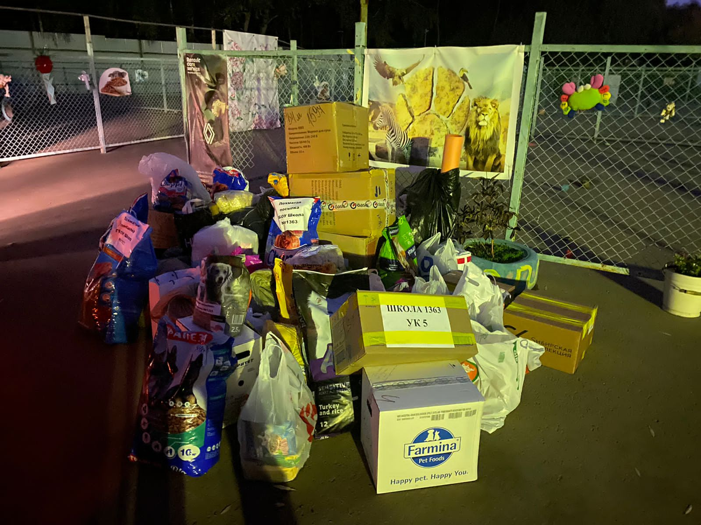
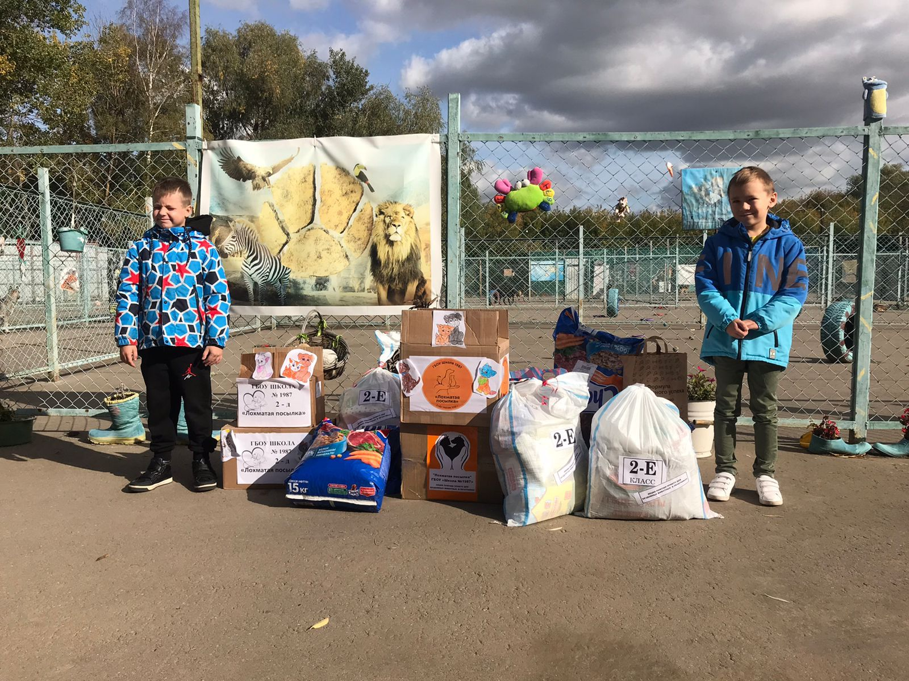
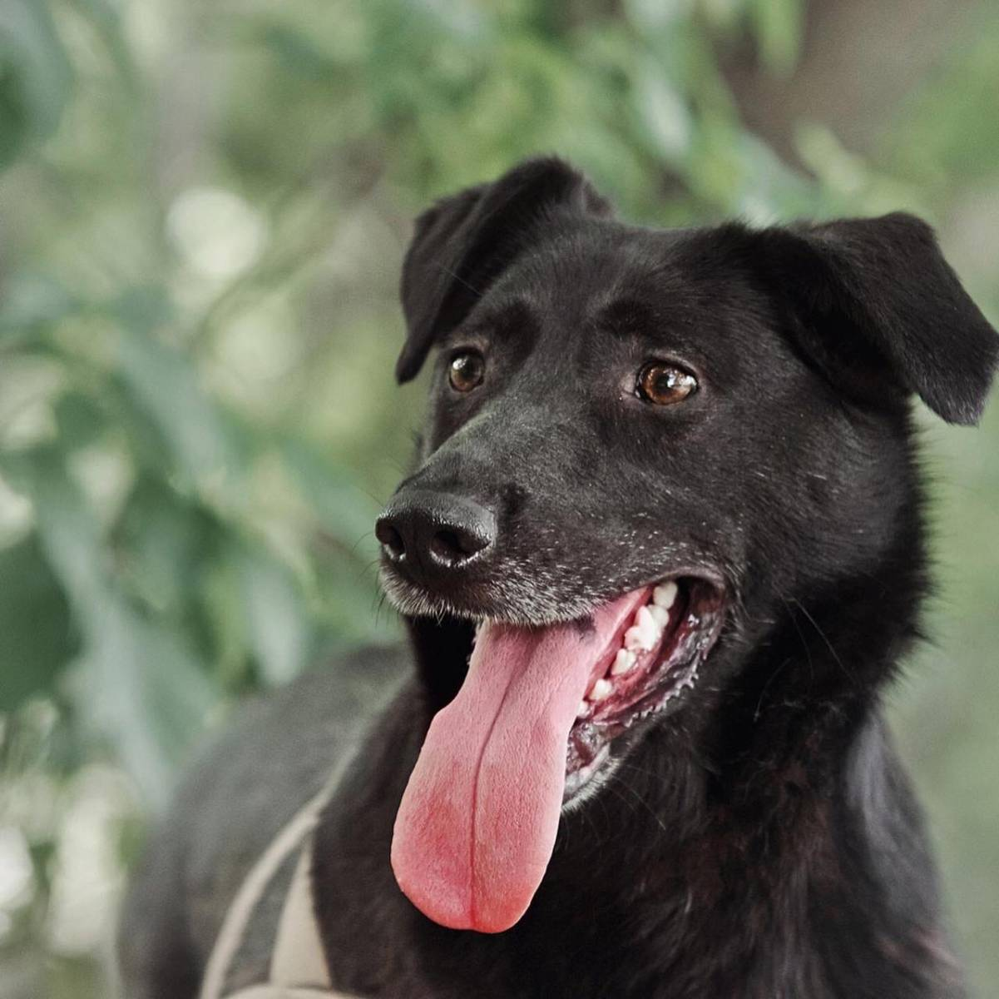
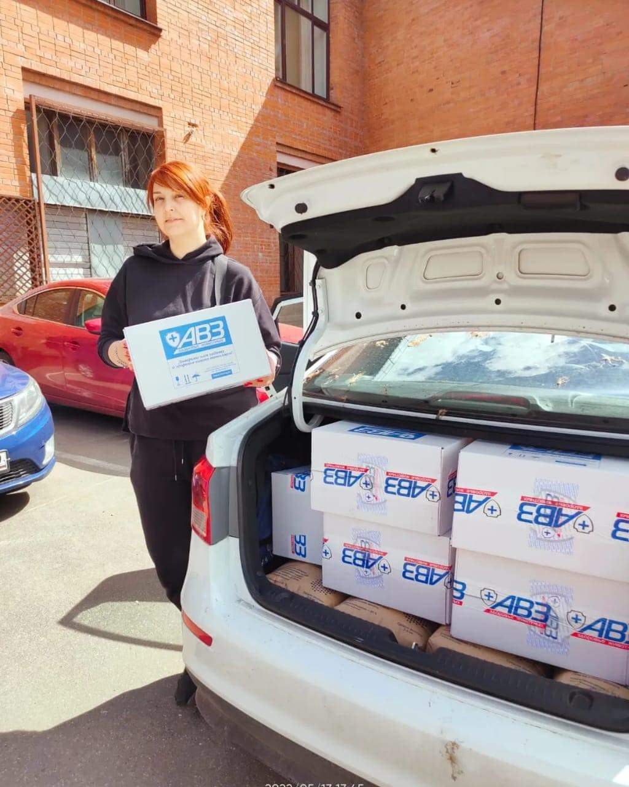
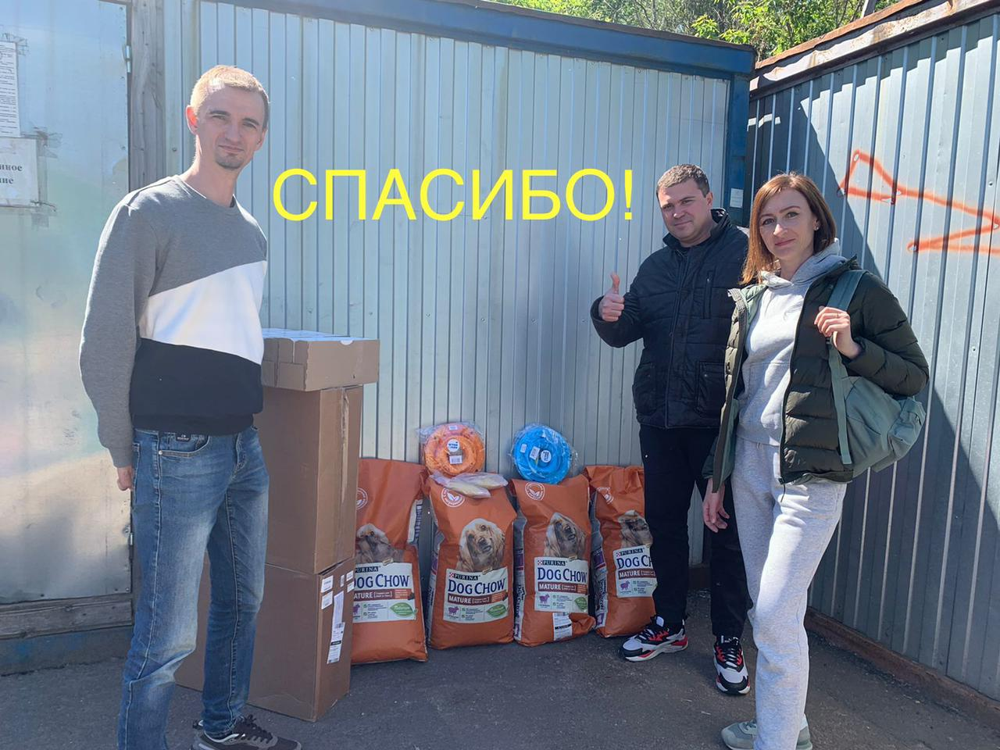
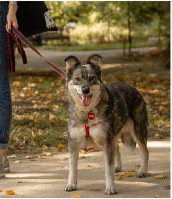
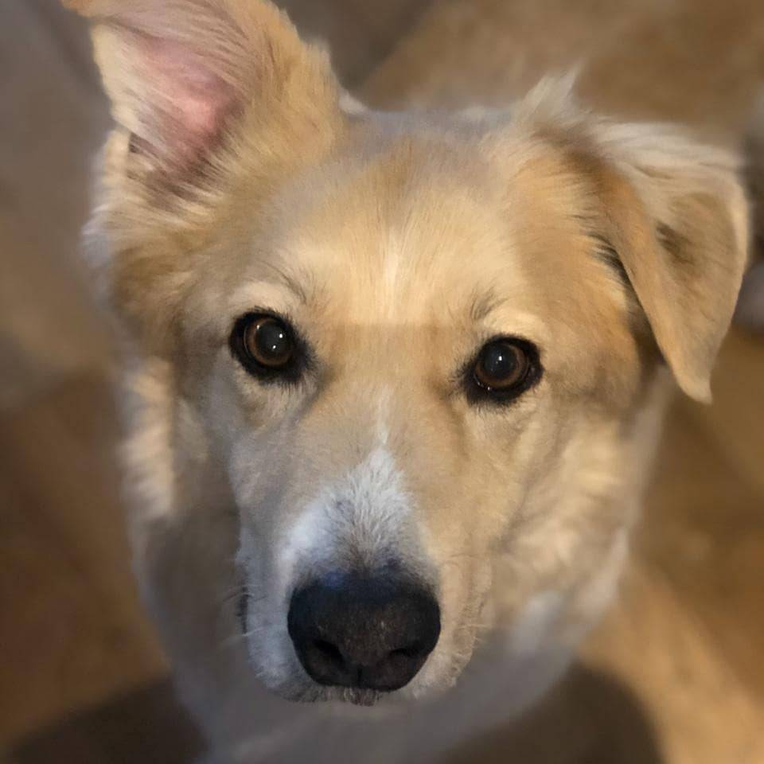

9 ноября 2022

Хвостики приюта от всей души благодарят наших помощников!!!
Благодарим фирму «Кухня на районе» за привезенный подстилочный материал для стационаров!
Ребят 7Л класса ГБОУ Школа 1987, их родителей и классного руководителя Кондрушину И.Н. за вкусные подарки хвостикам!
Оксану за сухие корма старичкам!
Огромное спасибо всем за помощь!
|
20 октября 2022

Огромное спасибо «Центру патологии речи и нейрореабилитации» за переданные в приют Печатники матрасы!
Они очень нужны для больных собак, которые проходят лечение в нашем стационаре.
|
2 октября 2022

Москва, район Печатники
Убежала на прогулке приютская собака!
Очень важна любая информация!
Кличка Нора. Пугливая. Кличку знает плохо. Можно ещё звать Эсми (имя сестры).
Была в той же шлейке, как на фото.
Просьба не пытаться ловить, если не подойдёт сразу, звоните по телефонам:
+79217626308 или +79777243082
|
15 сентября 2022

Приют Печатники выражает огромную благодарность Фонду Котодетки @kotodetki за постоянную помощь нашим подопечным.
Целая машина матрасов и одеял для наших старичков и животных в стационаре.
Пледы, одеяла и подушки (не пух/перо), мягкие матрасы и ковры это ВСЕГДА очень нужно.
Ваша поддержка очень важна для наших хвостиков! |
2 августа 2022

Приют Печатники благодарит наших дорогих помощников!️
- ООО Преферент-Сервис и его сотрудников: Малышеву Анну,
руководителя филиала в Москве, Сергея Пушкова и Александра Борозенец за много сухих и влажных кормов для собак и кошек и игрушки для котиков!
- Евгения Переседова, Управляющего сети фитнес-клубов Gold’s Gym в Москве за привезенные в приют полотенца!
Они очень нужны для наших больных песиков, лежащих в стационаре.
- Олега Алексеевича (бренд «2PETS”) за подаренные приюту миски и игрушки для кошек и амуницию для собак!
- Людмилу за сухой и влажный корм и подстилочки!
- ГБОУ школа имени Ф.М. Достоевского за привезённые в приют подушки!
|
8 июля 2022

ПРОПАЛА СОБАКА!
Из деревни Красная Пахра Троицкого района убежала бывшеприютская собака Мышка! Пожалуйста, сделайте репост и помогите вернуться Мышке домой!
Мышка убежала 15 июля 2020 года.
Она небольшого размера: около 35 см в холке, у нее необычная форма ушек, хвост бубликом. Мышка серого цвета со светлыми лапками.
Была в красном ошейнике с адресником-сердечком и шлейкой, но сейчас может быть и без них.
Мышка достаточно возрастная собака, ей больше 10 лет.
Очень надеемся ее найти.
Если вы ее увидели, пожалуйста, сфотографируйте и позвоните по телефонам:
+7 903 270 70 39,
+7 925 325 18 13,
️ +7 916 648 64 10.
|
30 июня 2022

Приют Печатники от всей души благодарит БФ Котодетки за постоянную помощь нашему приюту!
Фонд передал в приют 12 коробок с препаратом БАРС от блох и клещей, теперь наши подопечные под надёжной защитой.
Огромное спасибо
|
25 мая 2022

Арго, из приюта Печатники - стал домашним псом!
Да, так сошлись звёзды, и в очередной раз я убеждаюсь, что все по судьбе!
Арго как-то сразу, очень гармонично вписался в эту семью, и даже первые дни в новом доме, не паниковал, вел себя очень культурно, спокойно и достойно!
У Арго теперь есть все, о чем мы с ним мечтали: уютный дом и любящие руки!
Обожает он конечно же хозяйку Марию, очень нежно и трепетно относятся к дочке Авроре, ну и по-джентльменски к кошке Кисулишне!
Арго очень быстро освоил правила поведения в семье, было конечно пару оплошностей, но это все мелочи!)
Хочу также поблагодарить всех, кто принимал участие в судьбе Арго, спасибо вам всем огромное!
|